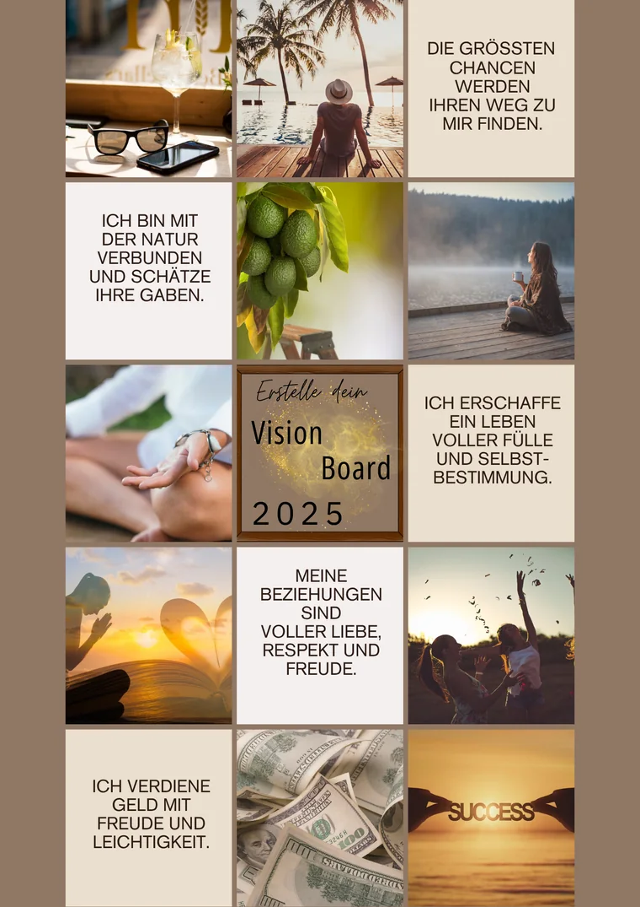

Motivation und Ziele reflektieren
Prompt: Hilf mir, meine Motivation und meine langfristigen Ziele für die Erstellung eines digitalen Produkts zu definieren. Stelle mir gezielte Fragen, um meine Beweggründe zu klären.
30 klare Aufgaben und 30 ChatGPT-Prompts – von deiner ersten Idee bis zu einem durchdachten Plan für Produkt, Verkauf und Sichtbarkeit.
Du musst an Tag 30 kein perfektes Produkt veröffentlichen. Diese Challenge hilft dir, aus vielen losen Gedanken eine klare, prüfbare Produktidee zu entwickeln. Kopiere den jeweiligen Prompt in ChatGPT, ergänze deine eigenen Informationen und halte die Ergebnisse in einem Notizbuch oder Dokument fest.
Wichtig: ChatGPT ist dein Denk- und Strukturierungswerkzeug. Prüfe Vorschläge, Zahlen und fachliche Aussagen selbst. Gib keine vertraulichen, personenbezogenen oder sensiblen Daten ein.
Tage 1–5: Motivation, Vision, Ausgangslage und Zielgruppe
Prompt: Hilf mir, meine Motivation und meine langfristigen Ziele für die Erstellung eines digitalen Produkts zu definieren. Stelle mir gezielte Fragen, um meine Beweggründe zu klären.
Prompt: Hilf mir, ein Visionboard für mein digitales Produkt zu planen. Welche Bilder, Begriffe oder Symbole könnten meine Vision greifbar machen? Stelle mir zuerst Fragen zu meinem gewünschten Alltag und meinen Zielen.
Prompt: Erstelle mit mir eine SWOT-Analyse für mein digitales Produkt. Stelle mir nacheinander Fragen zu meinen Stärken, Schwächen, Chancen und Risiken und fasse meine Antworten übersichtlich zusammen.
Prompt: Hilf mir, mögliche Nischen für digitale Produkte zu untersuchen. Frage nach meinen Erfahrungen und Interessen und zeige mir anschließend, wie ich die Nachfrage mit aktuellen Quellen selbst prüfen kann.
Prompt: Hilf mir, eine konkrete Beschreibung meiner möglichen Zielgruppe zu erstellen. Welche Bedürfnisse, Probleme, Wünsche und typischen Einwände sollte ich durch Gespräche und Recherche überprüfen?
Tage 6–10: Idee, Aufbau, Preis und erste Qualitätsprüfung
Prompt: Entwickle mit mir eine tragfähige Produktidee auf Basis meiner Nische und Zielgruppe. Stelle mir Fragen, damit wir Problem, Nutzen und kleinstes sinnvolles Ergebnis konkretisieren.
Prompt: Erstelle mit mir eine übersichtliche Gliederung für mein digitales Produkt. Welche Hauptpunkte und Unterthemen braucht die Zielgruppe wirklich, um das gewünschte Ergebnis zu erreichen?
Prompt: Welche Preismodelle gibt es für mein digitales Produkt? Vergleiche ihre Vor- und Nachteile. Nenne mir anschließend Fragen, mit denen ich Zahlungsbereitschaft, Kosten und Positionierung realistisch prüfen kann.
Prompt: Welche Gestaltungsprinzipien könnten zu meiner Zielgruppe und meinem digitalen Produkt passen? Erstelle ein einfaches Design-Briefing mit Farben, Typografie, Bildsprache, Lesbarkeit und benötigten Seitentypen.
Prompt: Erstelle eine Checkliste für die Qualitätsprüfung meines digitalen Produkts. Berücksichtige Inhalt, Verständlichkeit, Nutzwert, Quellen, Rechte, Datenschutz, Technik und ein realistisches Produktversprechen.
Tage 11–15: Plattform, Text, Gestaltung und Marketingstrategie
Prompt: Welche Plattformtypen eignen sich für den Verkauf meines digitalen Produkts? Vergleiche Funktionen, Gebühren, Zahlungsabwicklung, Auslieferung und Aufwand. Weise mich darauf hin, welche aktuellen Angaben ich beim Anbieter prüfen muss.
Prompt: Hilf mir, einen klaren Verkaufstext für mein digitales Produkt zu entwerfen. Stelle Problem, Zielgruppe, Inhalt und Nutzen verständlich dar, ohne Garantien, künstliche Verknappung oder übertriebene Erfolgsversprechen.
Prompt: Entwickle drei visuelle Konzepte, mit denen ich mein digitales Produkt auf Instagram wiedererkennbar präsentieren kann. Berücksichtige Lesbarkeit, Markenwirkung und unterschiedliche Beitragsformate.
Prompt: Hilf mir, drei bis fünf Content-Säulen für meinen Instagram-Auftritt zu entwickeln. Jede Säule soll ein konkretes Bedürfnis meiner Zielgruppe aufgreifen und sinnvoll zu meinem Produkt führen.
Prompt: Vergleiche geeignete Marketingwege für mein digitales Produkt. Stelle mir Fragen zu Zielgruppe, Zeit, Budget und Erfahrung und entwickle daraus eine kleine Strategie, die ich vier Wochen lang testen kann.
Tage 16–20: Redaktionsplan, Reels, Funnel und Community
Prompt: Erstelle mit mir einen vierwöchigen Content-Plan für Social Media. Verbinde hilfreiche Inhalte, Einblicke, Vertrauen und passende Produkthinweise, ohne jeden Beitrag zur Werbung zu machen.
Prompt: Entwickle zehn umsetzbare Ideen für Instagram-Reels, mit denen ich das Problem hinter meinem digitalen Produkt anschaulich und authentisch erklären kann. Ergänze jeweils Einstieg, Kernaussage und Handlungsaufforderung.
Prompt: Hilf mir, eine regelmäßige Social-Media-Routine zu planen, die zu meiner verfügbaren Zeit passt. Frage nach meinen Ressourcen und erstelle anschließend einen wiederholbaren Wochenablauf.
Prompt: Erkläre mir Schritt für Schritt einen einfachen Weg vom ersten hilfreichen Inhalt bis zum Kauf meines digitalen Produkts. Zeige mir, welche Seiten, E-Mails und Entscheidungen wirklich nötig sind.
Prompt: Welche ehrlichen und nicht aufdringlichen Möglichkeiten gibt es, meine Community in die Produktentwicklung einzubeziehen? Entwickle Fragen, Umfragen und kleine Tests, mit denen ich echtes Feedback sammeln kann.
Tage 21–25: Pinterest, Landingpage, Video, Kanäle und Meta Ads
Prompt: Wie könnte Pinterest für mein digitales Produkt eingesetzt werden? Erstelle einen Testplan mit Suchbegriffen, Pin-Ideen, Zielseiten und Kennzahlen. Kennzeichne Punkte, die ich mit aktuellen Pinterest-Quellen überprüfen muss.
Prompt: Erstelle eine übersichtliche Struktur für die Landingpage meines digitalen Produkts. Berücksichtige Zielgruppe, Problem, Ergebnis, Inhalt, Grenzen des Angebots, Preis, häufige Fragen und einen klaren nächsten Schritt.
Prompt: Hilf mir, ein Skript für ein kurzes Video zu entwickeln, das mein digitales Produkt verständlich vorstellt. Schreibe einen ehrlichen Einstieg, drei zentrale Nutzenpunkte und eine klare Handlungsaufforderung.
Prompt: Hilf mir, maximal zwei Hauptkanäle für die Vermarktung meines digitalen Produkts auszuwählen. Vergleiche sie nach Zielgruppe, Aufwand, Stärken und Wiederverwendung von Inhalten.
Prompt: Welche Grundlagen sollte ich verstehen, bevor ich Werbung auf Facebook und Instagram schalte? Erstelle eine Lern- und Vorbereitungsliste zu Ziel, Zielgruppe, Angebot, Werbemittel, Tracking, Budget und Erfolgsmessung.
Tage 26–30: Bewertungen, Folgeangebote, Updates und Rückblick
Prompt: Wie kann ich echte Kundenbewertungen transparent auf meiner Landingpage darstellen? Erstelle eine Checkliste für Einwilligung, Nachvollziehbarkeit, Kennzeichnung und eine Platzierung ohne irreführende Aussagen.
Prompt: Welche sinnvollen Folgeangebote könnten auf meinem digitalen Produkt aufbauen? Entwickle drei Varianten mit zusätzlichem Nutzen und erkläre, welche Nachfrage ich vor der Erstellung prüfen sollte.
Prompt: Entwickle eine respektvolle Strategie, wie ich bestehenden Kundinnen und Kunden ein passendes Folgeangebot vorstellen kann. Berücksichtige Relevanz, Einwilligungen und eine klare Abmeldemöglichkeit.
Prompt: Erstelle einen einfachen Prüfplan, mit dem ich mein digitales Produkt regelmäßig auf Aktualität, Verständlichkeit, technische Funktion und Kundenfeedback kontrollieren kann.
Prompt: Führe mich durch eine ehrliche Reflexion meines ersten Monats. Frage nach Erkenntnissen, offenen Annahmen, Rückmeldungen und nächsten Schritten und fasse daraus drei konkrete Prioritäten zusammen.
Nutze die sieben Vorlagen begleitend zu den Prompts oder drucke nur die Seiten aus, die du gerade brauchst.
Ein Visionboard darf ruhig persönlich aussehen: klar und ruhig, bunt und lebensnah oder ganz auf dein Business ausgerichtet.

Ein Visionboard ist keine Erfolgsgarantie und ersetzt keinen Businessplan. Es macht sichtbar, wie du arbeiten, leben und deine Kundschaft unterstützen möchtest. Dadurch kannst du leichter prüfen, ob deine Produktidee wirklich zu deinem gewünschten Alltag passt.
In einem persönlichen 1:1-Gespräch schauen wir gemeinsam auf deine aktuelle Situation und darauf, wobei du gerade Unterstützung brauchst.
1:1-Angebot bei Smart Remote Life ansehen →